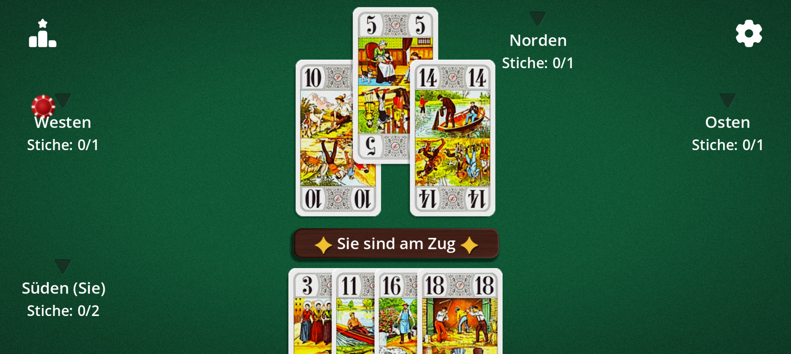

Klassische Kartenspiele, neu gedacht für das Handy.
CardForgeStudio ist ein unabhängiges Studio, das traditionellen Kartenspielen neues Leben einhaucht: originalgetreue Regeln, eine sorgfältige Oberfläche, Partien mit einem Fingertipp.
Das Studio
Nur Kartenspiele
Tarot, Stichspiele und Ansagespiele: Wir konzentrieren uns auf klassische Kartenspiele.
Für Touch gemacht
Große Buttons und gut lesbare Karten auf jedem Bildschirm, vom Smartphone bis zum Tablet.
Ihre Regeln, Ihre Wahl
Jedes Spiel bietet einstellbare Varianten, damit Sie wie zu Hause spielen.
Eigenes Framework
Unsere Spiele basieren auf einem mit Godot entwickelten Kartenspiel-Framework: weitere Titel folgen.
Unsere Spiele
Tarot Africain
22 Karten, eine Wette, die gehalten werden muss: Sagen Sie genau an, wie viele Stiche Sie gewinnen – nicht mehr, nicht weniger. Spielen Sie gegen Bots, aktivieren Sie Varianten (Mexikanisch, Blind, Doppel-20 …) und bleiben Sie als Letzter übrig.

Weitere klassische Kartenspiele folgen bald.